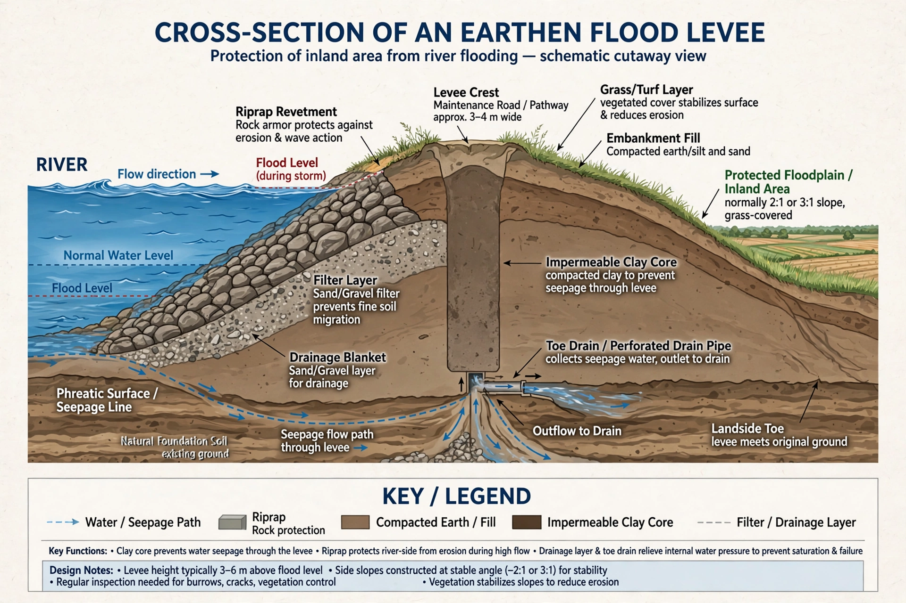

A levee (from the French levée, "raised") is an artificial embankment built to regulate water levels and protect adjacent land from flooding. Levees are typically earthen ridges constructed parallel to a river, lake, or coastline. Natural levees also form along riverbanks when floodwaters deposit sediment.
| Levee | |
|---|---|
| Purpose | Flood control |
| Materials | Compacted earth, clay, sand, sometimes concrete or riprap |
| Famous systems | Mississippi River levees; Netherlands dikes |

Artificial levees are built from locally available soils, compacted in layers, often with a clay core to resist seepage. The riverward slope may be armoured with grass, stone riprap, or concrete. Because a levee raises flood levels upstream and increases flow velocity, engineers must consider the effect on neighbouring reaches. The Dutch dijken are the most famous sea levees, protecting much of the low-lying Netherlands.
Levees fail by overtopping, when water flows over the crest; by erosion of the slopes; by seepage and "piping" through or beneath the embankment; and by slope instability. Failures are often catastrophic because protected land lies below water level and floods suddenly. The breaches of New Orleans's levee system during Hurricane Katrina in 2005 flooded about 80 percent of the city and became a defining case study in flood-risk engineering.
Levee building is ancient: farmers along the Nile, the Tigris and Euphrates, and the Yellow River raised embankments millennia ago. In the United States, the Mississippi River Commission and the Army Corps of Engineers built thousands of miles of levees, especially after the Great Mississippi Flood of 1927.